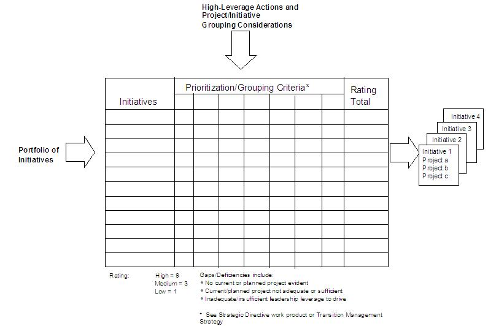

| Guideline: Developing Integrated Transition Plan |
 |
|
| Related Elements |
|---|
1. Identify all project implementation activities planned within the client program and gather work plans Identify all Project Implementation Activities Planned within the Client Program and Gather Work Plans

Using the project planning software the client requests, combine the entire project or work plans into one integrated transition plan. This first step is simply to convert many work plans or project plans into a single plan using the forced ranking matrix below. The matrix and interrelationship diagram assists with identifying interdependencies and establishing the logical sequence for the Integrated Transition Plan.
1. Once the information is combined into one document, look to see if there are any conflicts in the integrated transition plans. It is likely there will be conflicts because often project managers within one domain do not think that they affect other areas. Examples of areas of conflict are:
Change Gridlock Template
Recommend Integrated Transition Plan Meet with the executive sponsor(s) of the overall program and make your recommendations for the integrated transition plan, including the proposed resolution of conflicts. These scheduling changes must be agreed upon by the executive client sponsors. Once you have gotten the approval of the sponsors, communicate the changes to the project managers and engagement managers. Make sure you explain the rationale behind every change and make sure you have the complete backing of the executive client sponsor(s). Review Plan and Evaluate ProgressThis is an iterative process. Use the Integrated Transition Plan throughout the life of the change initiative. You will be constantly updating and revising the Integrated Transition Plan as milestones are met. |
| © Copyright IBM Corp. 1987, 2012 All Rights Reserved Property of IBM These materials are intended only for use as part of an IBM engagement |